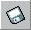
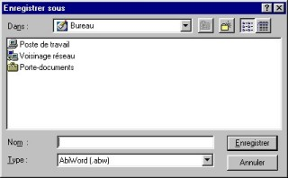
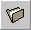
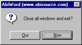

The basics
Let us begin with the simple but essential things
which AbiWord has in common with almost any other application:
* Open AbiWord
* Create a new document
* Save a document
* Open a document
* Exit AbiWord
If AbiWord has been correctly installed, you
should be able to start it in two different ways:
(Windows)
- The simplest is to double-click on the icon
located on the Windows desktop.
- Otherwise, click on the Start button on the
Windows taskbar, then go to the
Programs menu, then to the AbiWord group and
click on the AbiWord icon.
- In Linux, either click on the AbiWord icon in your menu,
or on your desktop. You can also start Abiword by typing "abiword" into
a X-terminal.

When you open AbiWord, a new document is
created and you can start typing your text on
the blank page. We shall soon see how to format
the text on the page.
There are four ways to create a new document:
- Go to the File menu and click on
"New" ou
- Go to the Window menu and click on
"New window" ou
- Click on the "Create a new document"
 or or
- Use the keyboard shortcut by pressing the
"Ctrl" and "N"
keys simultaneously.
Another AbiWord window opens with a new
blank page. It is important to grasp this, since
AbiWord is a "single document
interface" (SDI) as opposed to
"multiple document interfaces" (MDI)
such as Microsoft Word where all your documents
are in the same Word window. For more about the difference
between these two concepts, see SDI Vs. MDI
Having created your document, you now have to
save it (on floppy or hard disk) so that you can
get it back later. But first you have to
know the difference between "Save"
and "Save as..."
- If your document has never been saved,
you will have to give it a name and choose where
to store the file. For that you must
"Save as..." ; There are two ways
to save as:
- Go to the File menu and click on
"Save as" or
- Click on the "Save
as..." icon
In both cases, a window appears.
Select the location where to place the document
(in a folder on the hard disk or on the floppy) and type the
name of the document in the "Name" field, then
click on the "Save" button

The filename and path to the document appear in
place of "Untitled1" in the
titlebar of AbiWord: your document has been saved.
- So that you don't have to tell AbiWord the
name and path of the document
every time you save it, you "Save" the
document. This updates the new document
with modifications simply and quickly.
To "Save" there are three
different ways:
- Go to the File menu and click
on "Save" or
- Click on the "Save the document"
icon or
- Use the keyboard shortcut by pressing the
"Ctrl" and "S"
keys simultaneously.
Attention: saving is almost instantaneous
and the previously saved document
is irretrievably lost.
PS:
- If you update a document but want to keep previous
versions, you have to "Save
as..."
- AbiWord lets you save documents in several formats:
*.abw : this is AbiWord's default format. It is
an XML format
*.zabw : abw format compressed
to reduce the file size
*.rtf : this is a standard
"works anywhere" format (keeps text
formatting)
*.txt : a plain text file with no formatting.
(the file size is reduced)
*.utf8 : this is a plain text format which
can encode many character sets in a multi-byte format.
*.html : the universal standard for Web pages.
*.latex : LaTeX format file.
There are three ways to open a file that has been saved:
- Go to the File menu and click on
"Open" ou
- Click on the "Open an existing document" icon  or
- Use the keyboard shortcut by pressing the
"Ctrl" and "O"
keys simultaneously.
In each case, a window appears.
Select the type of document to open and its location
(a directory on the hard disk or the floppy) and double-click
on the name of the document to open. Your document will
then open.

A simpler way to open
recent documents is to go to the File menu
and click on one of the last four documents
which are listed for easy access. These documents are
arranged in chronological order: the most recent is
in position one and the least recent in position four.
AbiWord lets you open files
originating from different sources:
*.abw, *.zabw, *.rtf, *.txt, *.utf8
*.doc : files written by Microsoft Word
(all versions)
There are three ways to exit AbiWord:
- Go to the File menu and click on
"Exit" ou
- Click on the button in the
titlebar or
- Use the keyboard shortcut by pressing the
"Alt" and "F4" keys at
the same time.
In all three cases, the AbiWord window closes.
You can also:
* Minimize AbiWord by clicking on the button in the titlebar and reduce it to a
button on the taskbar so as to work with
another program.
* Maximize the AbiWord window or restore it to normal
size by clicking on the button  in the
titlebar. In Windows, double-clicking on the
titlebar will have the same effect. in the
titlebar. In Windows, double-clicking on the
titlebar will have the same effect.
* In Unix, furl the AbiWord window, reducing it
to its titlebar. In KDE, double-clicking on the titlebar
furls the window.
PS:
- If you try to exit AbiWord while a
document is open but not saved, the
window below appears:

Click on the Yes button to
save the document, on the No button to
exit without saving the document or on the Cancel
button to stay in AbiWord.
- If several documents are open at the same
time, go to the File menu and click
on "Exit" while holding down
the "SHIFT" key to close all the
windows at once. The window below appears
to ask you whether you want
to close all the windows or not.

|